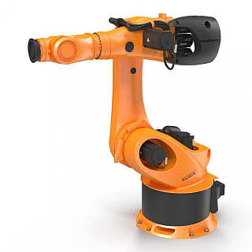
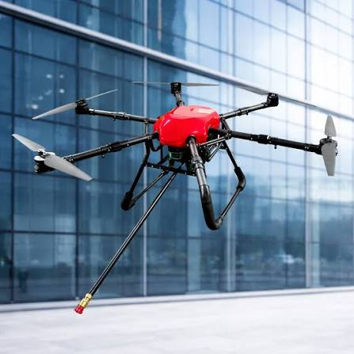

Поєднання штучного інтелекту з фізичними механізмами дало поштовх до створення нового покоління автономних роботів. Такі системи здатні самостійно орієнтуватися у просторі, розпізнавати перешкоди за допомогою комп'ютерного зору та приймати оперативні рішення в умовах динамічного середовища.


Особливе місце в сучасній робототехніці посідають безпілотні літальні апарати та мобільні наземні платформи, що застосовуються для логістики, картографування, моніторингу довкілля та виконання завдань у небезпечних для людини зонах.
Застосування сенсорів лідарів, ультразвукових датчиків та гіроскопів у поєднанні з алгоритмами SLAM (синхронної локалізації та побудови карти) забезпечує високу точність пересування автономних пристроїв.